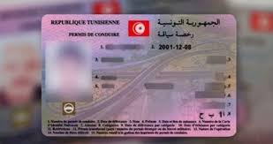
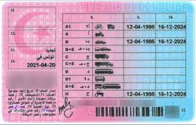

Le décret n°370 de 2024 du 19 juin 2024 a fixé les avantages fiscaux accordés aux Tunisiens résidant à l’étranger ainsi que les conditions et modalités de leur octroi. Ce régime permet aux Tunisiens résidants à l’étranger d’importer ou d’acheter localement, lors de leur dernière entrée en Tunisie, un véhicule automobile de tourisme, ou un véhicule utilitaire ou un motocycle.
Objectifs :
Favoriser le retour des TRE en facilitant l’acquisition d’un véhicule.
Encourager l’investissement des TRE en Tunisie.
Conditions :
Être un TRE depuis au moins 2 ans.
Résider en Tunisie de manière permanente ou définitive après importation.
Un seul FCR accordé par personne, valable 5 ans (non cumulable).
Avantages :
Exonération totale ou partielle des droits de douane et TVA.
Droit de circuler avec une plaque d’immatriculation spéciale (RS).
Conduire une voiture ou une moto bénéficiant d’une exonération totale
Les personnes habilitées à conduire les véhicules immatriculés en RS sans autorisation préalable sont les suivantes :
Le bénéficiaire de la Franchise:
Le conjoint du bénéficiaire (mari ou femme, il lui suffit, en cas de contrôle, de présenter un document justifiant de sa qualité d’époux ou d’épouse);
Toute autre personne en présence du bénéficiaire ou de son conjoint (à bord du véhicule).Les personnes habilitées à conduire les véhicules immatriculés en RS sur autorisation exceptionnelle des services de la douane, sont :
Les ascendants du bénéficière (le père, la mère)
Le conjoint du bénéficiaire suite à sa demande
Les descendants du bénéficière (les enfants)
Les frères et sœurs du bénéficière
et ce, sur demande (à télécharger ici) déposée auprès du Bureau régional compétent territorialement accompagnée des documents suivants :
Photocopie de la carte d’identité nationale du bénéficiaire du privilège (propriétaire du véhicule);
Photocopie de la carte grise du véhicule
Photocopie de la carte d’identité nationale du bénéficiaire de l’autorisation
Photocopie de son permis de conduire du bénéficiaire de l’autorisation
Extrait de naissance du bénéficiaire du privilège (propriétaire du véhicule), datant de moins de 3 mois
Extrait de naissance du bénéficiaire de l’autorisation, datant de moins de 3 mois.
Un permis pour conduire un véhicule RS est accordé pour un an, deux ans ou trois ans, selon le choix du propriétaire de la voiture. Sachant que les mêmes documents qui composent le dossier doivent être soumis lors de chaque processus de renouvellement de l’autorisation.
Important :
À l’exception des titulaires de permis, la voiture ne peut être conduite par personne sauf si son propriétaire ou son partenaire est présent en tant que passager dans la voiture.
📄 Exemple de contrat de vente
En Tunisie, la vente d’un véhicule entre particuliers doit être appuyée par un contrat signé et légalisé auprès de la municipalité.
Éléments obligatoires :
Identité complète des deux parties (nom, prénom, CIN, adresse).
Description complète du véhicule : marque, modèle, immatriculation, année, N° de châssis, kilométrage.
Prix de vente (mention en chiffres et en lettres).
Date et lieu de la vente.
Documents à annexer :
Carte grise originale.
Certificat de situation administrative (non-gage).
Conseil : Pense à effectuer la déclaration de cession au niveau de la recette des finances.
⚖️ Droit de conduire
Le Code de la route tunisien encadre strictement les conditions de conduite et les droits liés au permis.
Permis étrangers :
Valide 1 an après l’arrivée en Tunisie (pour les non-résidents).
Conversion possible si convention bilatérale (France, Allemagne, etc.).
Assurance obligatoire :
Responsabilité civile minimale exigée.
Peut être complétée par une assurance tous risques.
Infractions et sanctions :
Excès de vitesse : amendes de 40 à 120 TND, retrait de permis possible.
Conduite en état d’ivresse : retrait immédiat + poursuites pénales.
paiement d'Infractions
L'amende peut être payée aux guichets de la Recette des Finances de votre choix, à ce titre, les modes suivants sont acceptés : la carte bancaire via les terminaux de paiement électroniques, les chèques bancaires, le numéraire (en espèces).
Ou par carte bancaire via Internet.
Ou par mobile *127# : Tunisie Telecom *122# : Ooredoo *139# : Orange
NB:Votre paiement sera pris en charge par le Système de Paiement Sécurisé ClicToPay relevant de la Société Monétique de Tunisie qui respecte les normes internationales en la matière.
Le permis de conduire tunisien est délivré après une formation théorique (code) et pratique.
Conditions d’obtention :
Âge minimum : 18 ans pour les voitures (cat. B).
Inscription dans une auto-école agréée.
Test théorique informatisé + test pratique sur route.
Validité :
10 ans (renouvelable).
Un contrôle médical peut être exigé à chaque renouvellement.
Documents à fournir :
Formulaire d’inscription rempli
4 photos d’identité
Certificat médical
CIN + justificatif de résidence


Vignette automobile
En Tunisie, la vignette automobile est une taxe annuelle obligatoire à payer pour chaque véhicule motorisé. Elle varie en fonction de la puissance fiscale du véhicule (chevaux fiscaux) et du type de carburant (essence ou diesel).
La date limite de paiement est généralement fixée au 5 février de chaque année.
Le montant dépend de la puissance fiscale : par exemple, une voiture de 6CV essence paiera moins qu’un 10CV diesel.
Le paiement peut se faire en ligne via la plateforme de la DGI ou dans les recettes des finances.
Les véhicules populaires, électriques, ou certains engins agricoles peuvent être exonérés ou bénéficier de tarifs réduits.
Sanctions : En cas de non-paiement, une pénalité de retard est appliquée, et la carte grise peut être bloquée.
Astuce : Gardez toujours une copie de votre reçu dans le véhicule pour les contrôles routiers.
La vignette automobile est une taxe annuelle obligatoire en Tunisie, calculée selon la puissance fiscale (chevaux fiscaux) et le type de carburant. Voici un tableau récapitulatif :
Puissance fiscale (CV)
Essence (TND)
Diesel (TND)
De 1 à 4 CV
65
130
De 5 à 7 CV
130
210
De 8 à 9 CV
210
400
10 CV et plus
1000
1800
Voitures de luxe (valeur > 150 000 TND)
4000 TND (forfaitaire)
NB : Ces montants sont à titre indicatif. Vérifiez les dernières mises à jour sur le site de la Direction Générale des Impôts.